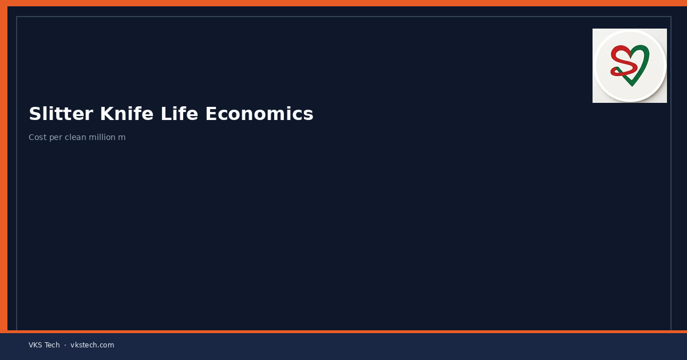
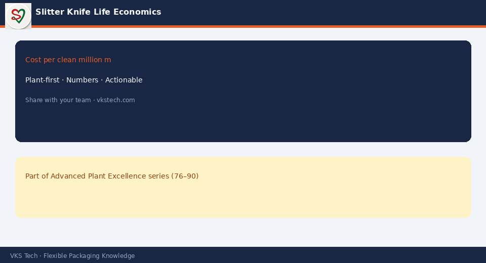

🔪 Knife Life Is Not Only a Maintenance Cost. Dull Knives Create Edge Defects, Dust and Extra Waste That Far Exceed the Price of Timely Replacement
📖 11-min read · Process Economics · Production + Maintenance + Quality
Many plants run slitter knives as long as possible to “save” on blade cost. The real cost of a dull knife is higher: poor edge quality, more dust, higher scrap, slower speeds, and customer complaints on edge appearance or seal issues. Understanding the true economics of knife life changes the decision from “how long can we push it” to “when is the lowest total cost point to change”.
- Track metres or hours per knife set and the quality result
- Watch for rising edge dust, fraying, or seal problems as early signals
- Compare blade cost to the waste and claims caused by dull knives
- Change on a planned interval based on data, not only when quality collapses
- Include knife condition in the start-up and shift checks

1. What Dull Knives Actually Cost
| Effect | Impact |
|---|---|
| Edge dust / fibre | Contamination, appearance rejects, cleaning time |
| Frayed or rough edges | Customer complaints, seal issues on some structures |
| Higher scrap | Edge trim waste and rejected rolls increase |
| Speed reduction | Operators slow down to manage quality |
| Extra changeovers | Emergency knife changes disrupt the plan |
2. Practical Management Method
- Log life — Metres or hours per knife set, and the structure/material type if it varies.
- Define signals — Visual edge quality, dust level, or a simple edge test that operators can use.
- Set a planned change point — Based on history, change before quality collapses, not after.
- Include in checks — Knife condition on the shift start-up list and the daily dashboard if relevant.
- Review cost — Periodically compare blade spend vs waste and claim cost related to edges. The numbers usually support earlier changes.
Treat knife life as a process parameter with data, not as a pure maintenance cost to be minimised in isolation.
🔪 चाकू का जीवन सिर्फ मेंटेनेंस लागत नहीं है। कुंद चाकू एज दोष, धूल और अतिरिक्त वेस्ट पैदा करते हैं जो समय पर बदलने की कीमत से कहीं ज्यादा होते हैं
📖 11-मिनट पढ़ें · प्रोसेस इकोनॉमिक्स · प्रोडक्शन + मेंटेनेंस + क्वालिटी
कई प्लांट ब्लेड लागत “बचाने” के लिए स्लिटर चाकू को जितना हो सके चलाते हैं। कुंद चाकू की असली लागत ज्यादा होती है: खराब एज क्वालिटी, ज्यादा धूल, ऊंचा स्क्रैप, धीमी स्पीड और ग्राहक शिकायतें। चाकू जीवन की असली अर्थव्यवस्था समझने से फैसला बदल जाता है।
- प्रति चाकू सेट मीटर या घंटे और क्वालिटी रिजल्ट ट्रैक करें
- एज डस्ट, फ्रेइंग या सील समस्याओं को शुरुआती संकेत मानें
- ब्लेड लागत की तुलना कुंद चाकू से होने वाले वेस्ट और क्लेम से करें
- डेटा के आधार पर प्लान्ड इंटरवल पर बदलें, क्वालिटी गिरने के बाद नहीं